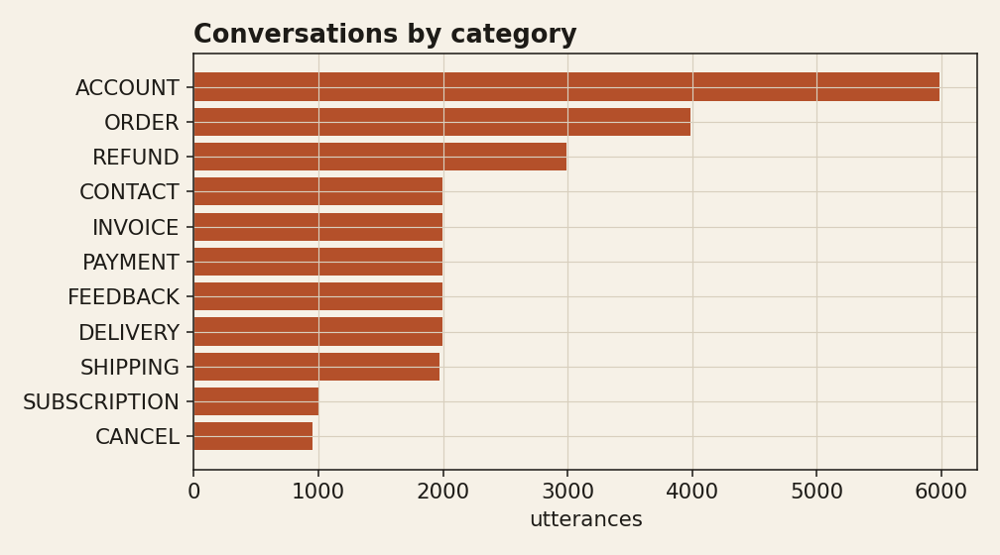
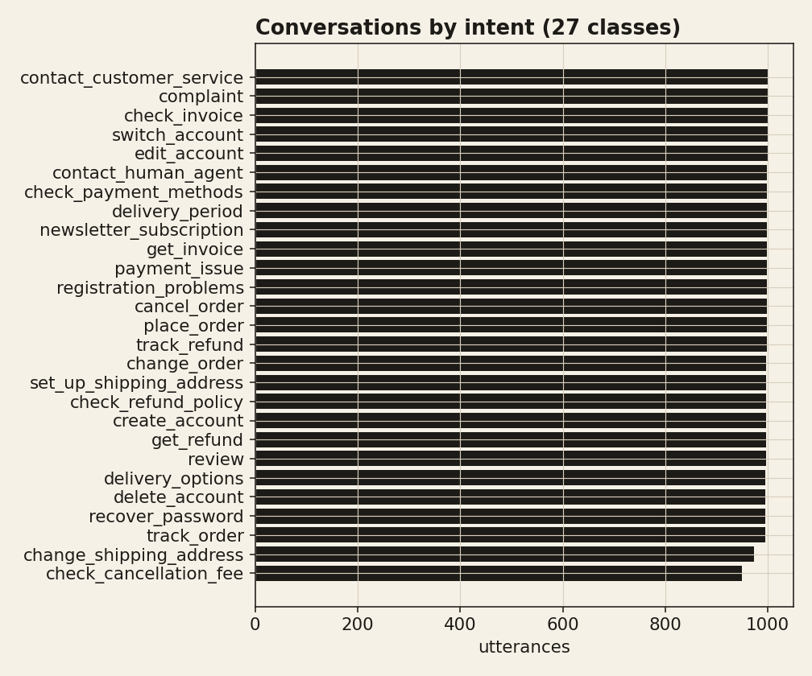
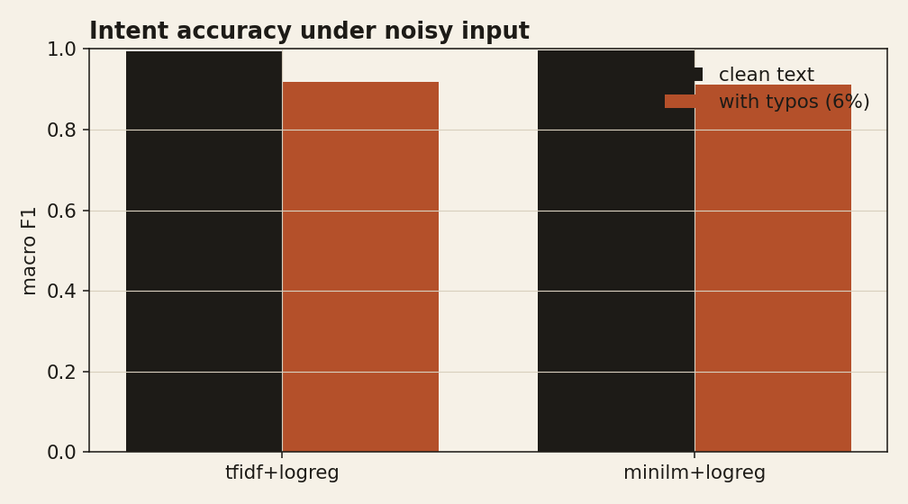
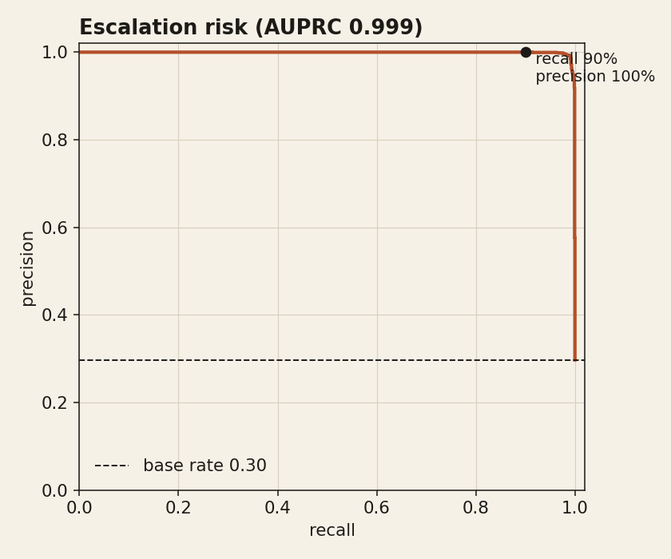

An end-to-end analysis of a public customer-support corpus: what customers contact about, how reliably their intent can be classified (including under noisy, real-world text), and which conversations carry escalation risk that a customer-success team should act on first.
Volume is concentrated in account, order, and refund topics. This distribution is itself a customer-success signal: refund and cancellation volume is where churn risk lives.


Both a TF-IDF baseline and a sentence-embedding model classify the 27 intents with high accuracy on clean text. Because production text is messier, each model is re-scored after injecting character-level typos. The embedding model degrades far less, which is the property that matters in deployment.
| model | macro F1 (clean) | macro F1 (typos) | accuracy (clean) |
|---|---|---|---|
| tfidf+logreg | 0.995 | 0.918 | 0.995 |
| minilm+logreg | 0.996 | 0.911 | 0.996 |

The support corpus is templated, so its intent labels are near-perfectly separable. To measure sentiment on messages that look like the real world, the model is trained and tested on the SemEval tweet-sentiment benchmark (real social posts, official train/test split, no leakage). Macro F1 of 0.627 across three classes is in line with strong lightweight baselines and, unlike the intent numbers, reflects genuine difficulty. The negative-sentiment head is then reused as a risk feature on the support conversations.
| metric | value |
|---|---|
| accuracy | 0.626 |
| macro F1 (3-class) | 0.627 |
| F1 (negative class) | 0.678 |
Escalation-prone conversations (explicit human-agent requests, complaints, cancellations and refunds) make up 30% of the corpus. A classifier on the utterance embedding ranks them with AUROC 1.000 and AUPRC 0.999; because the escalation label is derived from intent, this score is expected to be high, and its value here is the operating point it exposes. Tuned for high recall, a team can catch 90% of at-risk conversations while keeping precision at 100%, so the review queue stays small.

A single triage score blends escalation probability with predicted negative sentiment, surfacing the conversations a customer-success team should open first. The highest-priority held-out conversations:
| priority | escalation | neg. sentiment | intent | utterance |
|---|---|---|---|---|
| 0.99 | 1.00 | 0.99 | get_refund | i do not know what to do to obtain a goddamn refund of money |
| 0.99 | 0.99 | 0.98 | complaint | i am unhappy with your services, help filing a complaint |
| 0.98 | 0.99 | 0.98 | complaint | i am unhappy with your services, how do i lodge a complaint? |
| 0.98 | 1.00 | 0.96 | contact_customer_service | what do i have to do to call fucking customer support? |
| 0.98 | 1.00 | 0.96 | complaint | i don't know how i could file a goddamn customer claim |
| 0.98 | 0.99 | 0.96 | contact_human_agent | wana talk to a goddamn person |
| 0.97 | 1.00 | 0.95 | check_refund_policy | help me to see your goddamn refund policy |
| 0.97 | 1.00 | 0.95 | contact_human_agent | i cannot talk to a person |